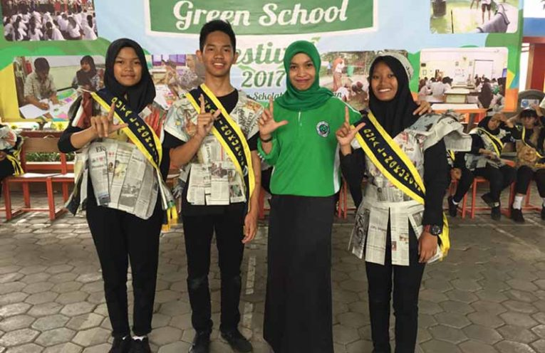
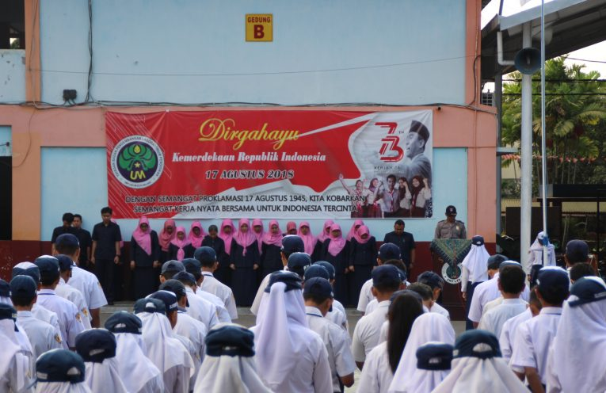
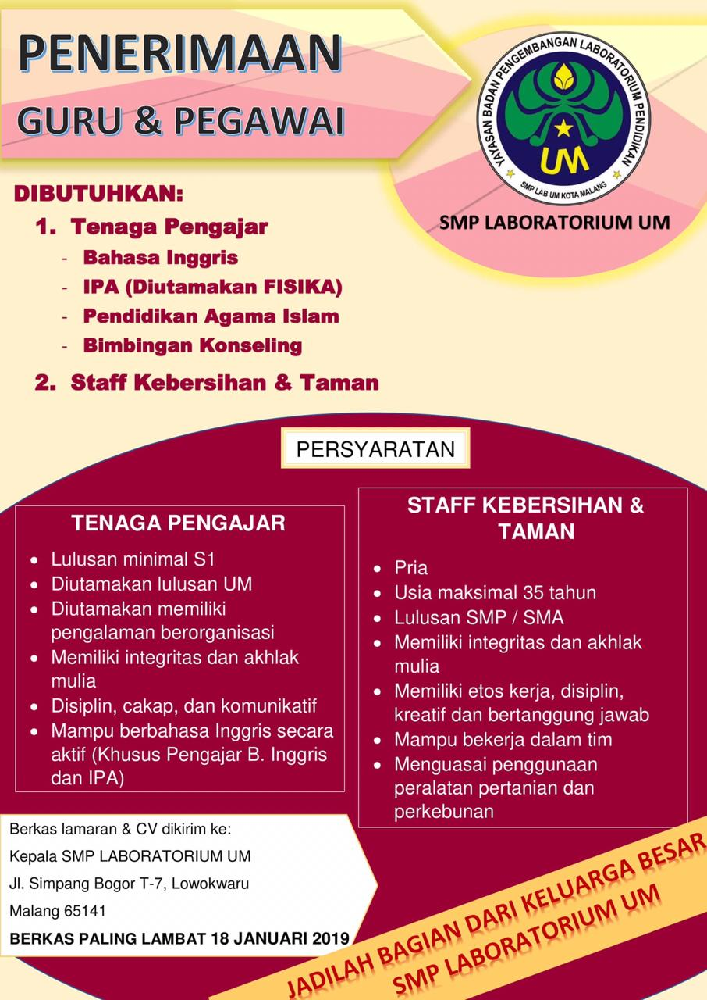

SMP LABORATORIUM
UNIVERSITAS NEGERI MALANG
Home
Profil Sekolah
Yayasan P2LP
Informasi
PPDB
Galeri
Organisasi
Kontak

Green School Festival 2017

Pembinaan Dari Pihak Kepolisian
Popular Articles

Featured Article
PENERIMAAN GURU DAN PEGAWAI
10 Januari 2019
PENERIMAAN GURU DAN PEGAWAI DIBUTUHKAN : Tenaga Pengajar Bahasa Inggris IPA (Diutamakan FISIKA) Pendidikan Agama Islam Bimbingan dan Konseling Staf Kebersihan dan Taman PERSYARATAN Tenaga Pengajar Lulusan S1 Diutamakan Lulusan UM Diutamakan memiliki pengalaman berorganisasi Memiliki integritas dan akhlak mulia Disiplin, Cakap dan Komunikatif